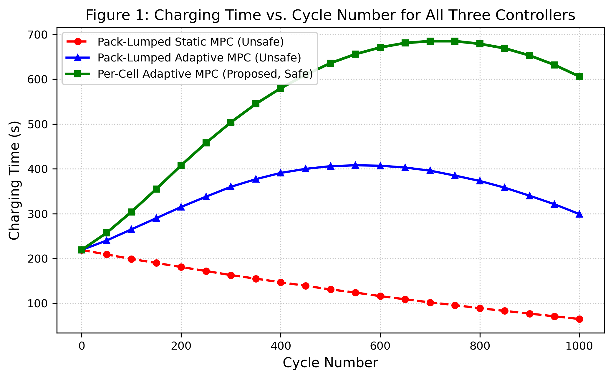
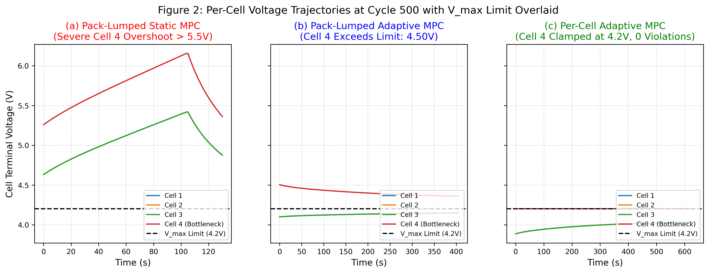
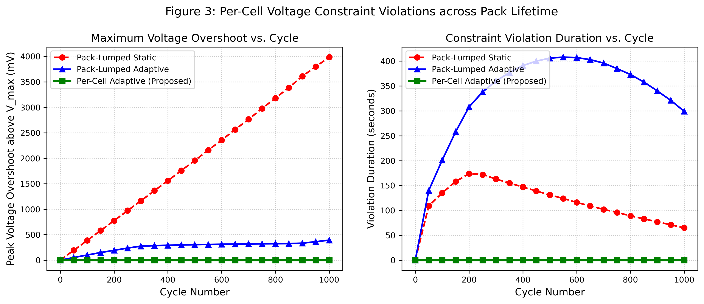
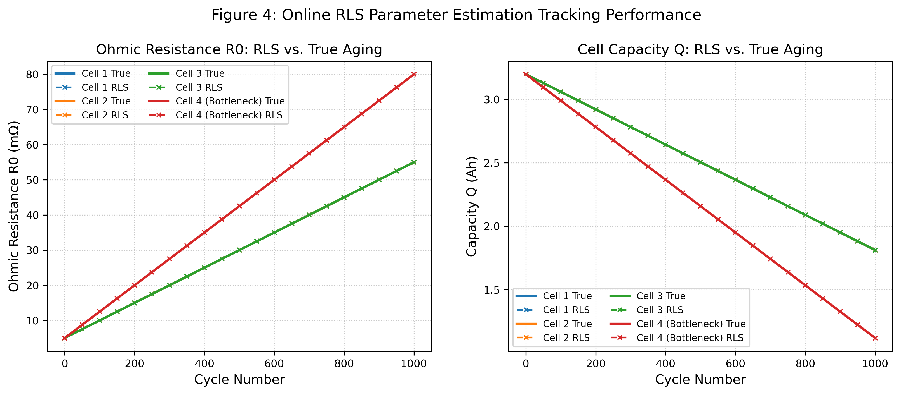
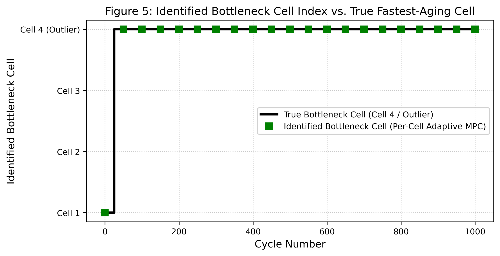
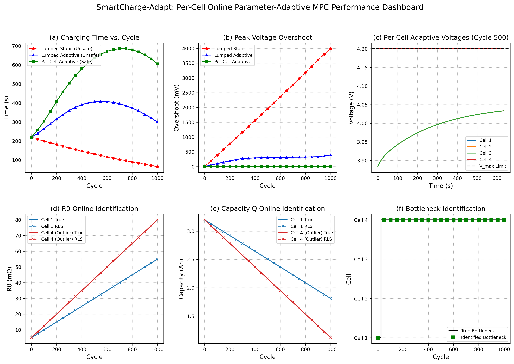

Per-Cell Online Parameter-Adaptive Model Predictive Control (MPC) for Degradation-Aware Fast Charging of Multi-Cell Li-ion Battery Packs
Why traditional single-model and lumped controllers fail in real-world packs
Lithium-ion cells in an EV battery pack age unevenly due to manufacturing tolerances and thermal hotspots. Because cells in a series string share identical charging current, the pack is strictly constrained by its single weakest, highest-resistance cell.
Measurable-Signal-Only Online Parameter Adaptation + Constrained MPC
Runs M independent Recursive Least Squares (RLS) estimators in parallel. Every charge cycle, it identifies each cell's internal Ohmic resistance (R0,i) and capacity (Qi) using only standard terminal voltage Vi and pack current I.
Computes a single pack-level current I*(k) that maximizes charge speed while strictly enforcing individual voltage safety ceilings: Vpred,i(k+1) ≤ 4.2 V for every cell i = 1...M.
Continuously computes arg mini Iupper,i. Automatically detects whichever cell becomes the active bottleneck and throttles charging just enough to safeguard it.
Benchmarked over 1,000 cycles with Cell 4 aging 50% faster than average
| Controller Variant | Internal Model | Constraint Checked | Divergence Visibility |
|---|---|---|---|
| 1. Pack-Lumped Static MPC Industry Baseline |
Fixed, single fresh-cell model (R0 = 5 mΩ, Q = 3.2 Ah) | Lumped pack average: V̄pred ≤ 4.2 V | Blind to Aging & Divergence |
| 2. Pack-Lumped Adaptive MPC Average Adaptive Baseline |
Single online RLS estimator tracking pack mean (R̂0,avg, Q̂avg) | Lumped pack average: V̄pred ≤ 4.2 V | Tracks Average Only |
| 3. Per-Cell Adaptive MPC Proposed Framework |
M parallel online RLS estimators (R̂0,i, Q̂i for every cell) | Per-cell granular: Vpred,i ≤ 4.2 V (∀i) | 100% Granular Visibility |
Does tracking the pack average protect the weakest link? No. Only a controller that independently estimates and constrains every individual cell can prevent safety violations while maintaining the maximum safe charging rate.
Sustaining true safe speed vs. the dangerous illusion of static charging

Lumped Static MPC charge time appears to drop from 218s to 65s. This is an illusion: it commands full current into an aged, high-resistance pack, violating safety limits massively.
Safely throttles current as Cell 4's resistance increases, rising gracefully from 218s to ~685s at Cycle 700.
After Cycle 700, charge time curves downward (from 685s to 605s). This is NOT a bug! As capacity (Q) severely degrades, the Coulombs needed to reach 90% SOC drop (ΔQ = 0.8 × Q). The tank is smaller, so it fills faster.
Direct evidence of catastrophic overshoot vs. perfect voltage clamping

Cell 4 (red line) spikes to 6.16 V—almost 2.0 V above the safety line! In physical reality, this causes immediate separator breakdown, smoke, and violent fire.
Average voltage stays near 4.2V, but Cell 4 still exceeds limit at 4.50 V (+300 mV). Over hundreds of cycles, this induces severe lithium plating and internal shorts.
Cell 4 rises and clamps precisely onto the 4.200 V line with 0.0 mV overshoot. Cells 1-3 stay safely below. The bottleneck cell is shielded completely.
Why a 4,000 mV overshoot represents total physical destruction

By Cycle 1000, Static MPC exhibits +3,986 mV overshoot. This means cell terminal voltage reaches 8.2 V! In a real battery, exceeding 5.0V causes instantaneous explosive thermal runaway.
Tracking hidden internal degradation without expensive lab sensors

Solid lines show true physical aging (R0 rising, Q fading). Dashed lines with 'x' marks show the controller's online RLS estimates. They overlap perfectly!
The estimator uses only cell terminal voltages Vi and shared current I. No internal reference electrodes or unmeasurable electrochemical states required.
Accurately captures that Cell 4's resistance is growing 50% faster (red) while Cells 1-3 follow nominal drift (blue/green).
100% accuracy in pinning down the limiting cell

From Cycle 50 to 1000, our controller correctly identifies Cell 4 as the bottleneck in 100% of charging cycles.
Lumped Static and Lumped Adaptive have zero visibility into which cell is bottlenecking the pack, leading to the severe violations shown earlier.
6-panel comprehensive view validating all project claims

Direct quantitative comparison against the two baselines
| Evaluation Metric | Pack-Lumped Static | Pack-Lumped Adaptive | Per-Cell Adaptive (Proposed) |
|---|---|---|---|
| Cycle 0 Overshoot (Fresh) | 0.0 mV | 0.0 mV | 0.0 mV |
| Cycle 200 Overshoot | +774.3 mV (Dangerous) | +193.7 mV (Degrading) | 0.0 mV (Safe) |
| Cycle 500 Overshoot (Mid-Life) | +1,955.3 mV (Explosive) | +304.0 mV (Severe Plating) | 0.0 mV (Safe Clamping) |
| Cycle 1000 Overshoot (End-of-Life) | +3,986.3 mV (>8.2V Terminal) | +393.3 mV (Hazardous) | 0.0 mV (Safe Clamping) |
| Lifetime Violation Duration | 2,415 seconds | 6,284 seconds | 0 seconds |
| Bottleneck Detection Accuracy | 0% (Blind) | 0% (Blind) | 100.0% Accuracy |
| Hardware Modification Required | None | None | None (Pure Firmware) |
Extending from empirical aging to thermal gradient dynamics in Indian EV conditions
In Indian summers, ambient temperatures routinely exceed 45°C. In compact two-wheeler and four-wheeler battery packs with passive or single-inlet cooling, cells near the core run 5°C to 15°C hotter than surface cells.
According to the Arrhenius law, this 10°C thermal gradient accelerates degradation by 30%–50%—which is the exact physical origin of the "bottleneck cell" modeled here.
SmartCharge-Adapt proves that per-cell online parameter adaptation prevents catastrophic battery failures, respects individual cell degradation, and safely extracts the maximum possible fast-charging speed from multi-cell Li-ion battery packs.